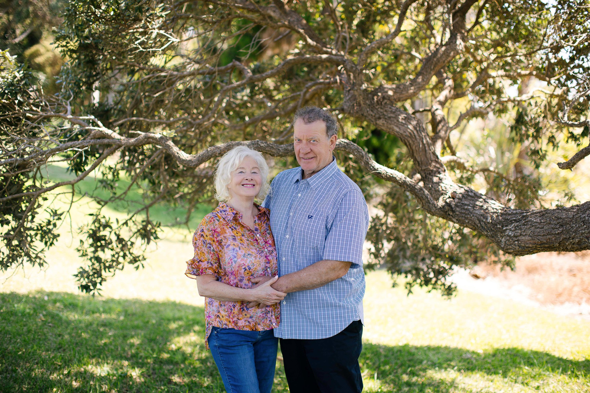

Holistic Nutritionist · Food Educator · Writer
Hello, I’m Lynn.
Although I’ve always loved everything about good food — the flavours, the rituals, the creativity — my journey into the science of nutrition has now become just as important to me, and these days I’m increasingly focused on what it truly means to eat for lasting health and wellbeing.
I made the decision to step away from corporate life and study nutrition back in the early 2000s, when I was living in the US. After earning my Bachelor of Science in Holistic Nutrition (with honours) from Clayton College, I ran a private clinical practice in Reno, Nevada, supporting clients with issues like fatigue, stubborn weight gain, and insulin resistance.
Since returning home to New Zealand in 2016, I’ve shifted my focus toward a subject now very close to my heart: using food to support recovery after illness, surgery, or injury.

Home is beautiful Tutukaka, Northland, where my partner Greg and I raise sheep, grow most of our own vegetables, and are working toward greater self-sufficiency on our small farm. It’s here that I wrote Heal Better, Heal Faster — a practical guide to using simple, nutrient-dense food to flourish after surgery, drawn from both personal experience and decades of clinical knowledge.
Alongside my writing, I also consult one-on-one with clients and look forward to speaking more publicly about the power of nutrition in recovery.
If you’d like to work together, I’d love to hear from you.
* * *